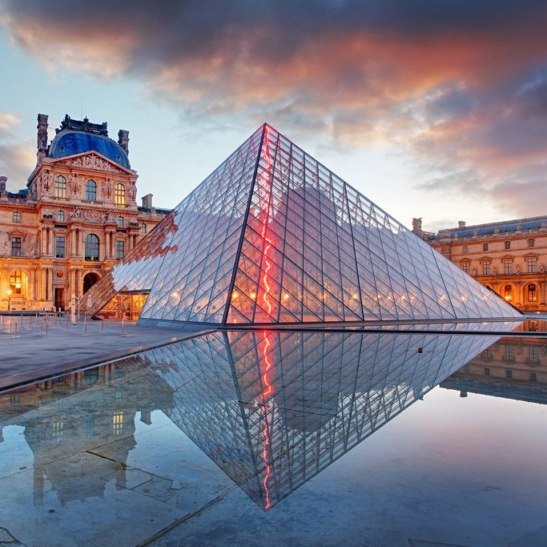
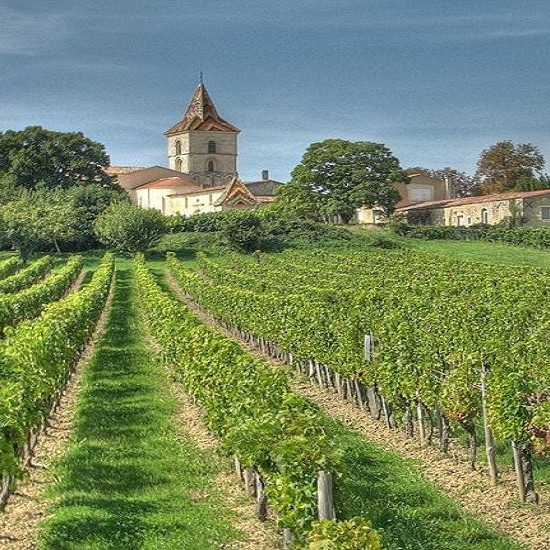

France
Exploring the Charms of La Belle France
France, often referred to as the "Hexagon" due to its distinctive shape, is a country that has left an indelible mark on the world. It's a place where Renaissance art, medieval castles, and culinary artistry coexist harmoniously. My journey through France was a quest to unravel the layers of its rich history and savor the flavors of its renowned cuisine.
 I kicked off my French adventure in the City of Love, Paris. The Eiffel Tower, standing tall against the Parisian skyline, was my first stop. Ascending to its summit, I was treated to panoramic views of the Seine River and the sprawling city below. One of my most memorable experiences in Paris was an evening cruise on the Seine. As the city's landmarks were illuminated, I savored a gourmet dinner on a riverboat, accompanied by live accordion music. It was a quintessentially Parisian affair that left me with a deep appreciation for the city's romantic charm.
Leaving Paris behind, I ventured to the sun-kissed region of Provence. Here, endless fields of lavender stretched to the horizon. I explored the charming village of Gordes, perched atop a hill and offering breathtaking views of the Luberon Valley. One of the highlights of my visit to Provence was a cooking class in Avignon. Guided by a local chef, I learned to prepare traditional Provençal dishes, including ratatouille and lavender-infused honey desserts. It was a hands-on experience that allowed me to connect with the region's culinary traditions.
My next stop was Normandy, a region steeped in history. I visited the D-Day beaches, where Allied forces landed during World War II. Standing on Omaha Beach, I couldn't help but feel the weight of history and the bravery of those who fought here. In the charming town of Bayeux, I marveled at the Bayeux Tapestry, a remarkable piece of medieval art that depicts the events leading up to the Norman Conquest of England. Sampling local cheeses like Camembert and Brie was another delightful experience in Normandy, where dairy craftsmanship is a time-honored tradition.
 Bordeaux beckoned with its rolling vineyards and elegant châteaux. I embarked on a wine tour of the region, exploring renowned appellations like Saint-Émilion and Pauillac. Tasting the world-class wines amid the picturesque vineyards was an oenophile's dream come true. One evening, I dined at a Michelin-starred restaurant in Bordeaux, savoring a gourmet meal paired with exceptional Bordeaux wines. The meticulous craftsmanship of both the chefs and winemakers was a testament to the artistry that defines this region.
France." This region is renowned for its fairytale châteaux and impeccably landscaped gardens. Château de Chambord, with its distinctive double helix staircase, was a particular highlight. I joined a hot air balloon ride over the Loire Valley, drifting above the treetops and catching glimpses of châteaux below. It was a magical experience that allowed me to appreciate the beauty and grandeur of this enchanting region from a unique perspective.
The French Riviera, or Côte d'Azur, welcomed me with its azure waters and Mediterranean allure. Nice, with its vibrant Promenade des Anglais, was my base for exploring the coast. I couldn't resist taking a dip in the refreshing Mediterranean Sea. One day, I embarked on a scenic drive along the corniche roads to the village of Èze. Perched on a hill, Èze offered panoramic views of the coastline, and I explored its picturesque streets and medieval architecture. Dining on fresh seafood at a seaside café in Nice was the perfect way to conclude my Riviera adventure.
My final destination in France was the iconic Mont Saint-Michel, a medieval abbey perched on a rocky island. I visited during low tide and walked across the exposed seabed to reach the abbey. The abbey's intricate Gothic architecture and stunning views of the surrounding bay left me in awe. Exploring the abbey's labyrinthine halls and cloisters was a step back in time, and I marveled at the dedication and craftsmanship of the medieval builders. It was a fitting conclusion to my French journey, a place where history and architecture converge in a truly remarkable way.
As I reflect on my travels through France, I'm reminded of the country's ability to tantalize the senses. From the romantic ambiance of Paris to the flavors of Provence, the historic resonance of Normandy, the elegance of Bordeaux, the fairytale charm of the Loire Valley, the Mediterranean allure of the French Riviera, and the architectural marvel of Mont Saint-Michel, France offers a feast for the senses like no other. I hope this virtual voyage has ignited your wanderlust and curiosity about the diverse wonders of France. Each region I visited unveiled a new facet of this multifaceted country. Until our next adventure, au revoir, and may your travels be filled with beauty, history, and culinary delights!